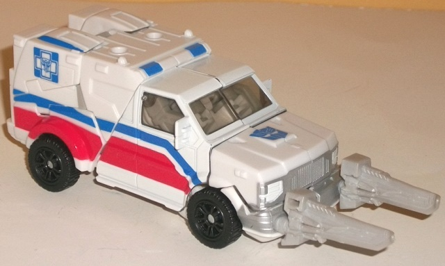
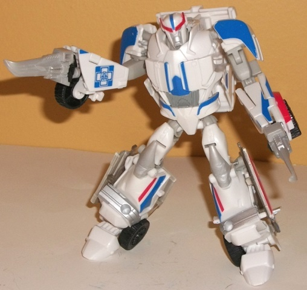
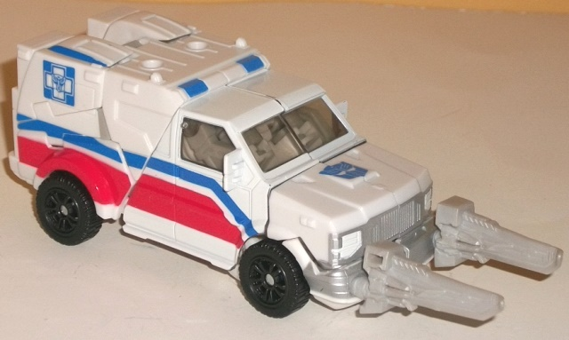
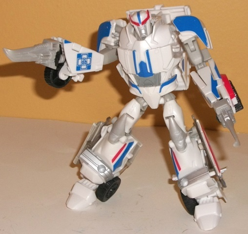
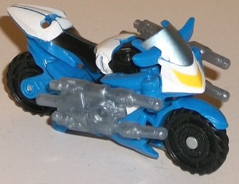
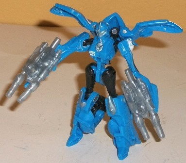
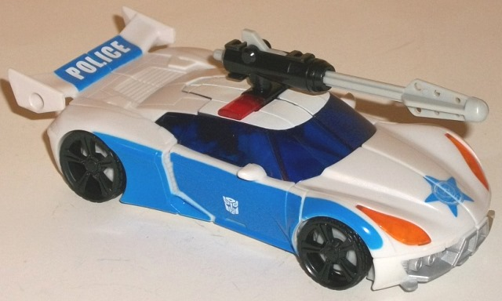
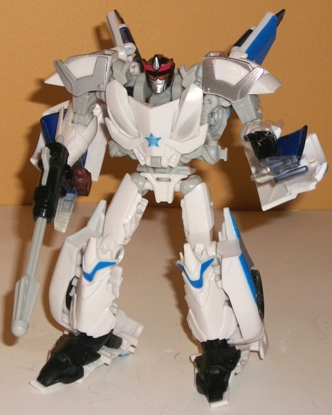

 
Size : Deluxe
Difficulty of Transformation : Medium
Color Scheme : White, off-white, tinted clear plastic, and some black, light milky gray, silver, sky blue, glossy gray, light red, and blue
Individual Rating : 7.5
Allegiances:
Autobot
Set Price
: $33 (U.S.)
(NOTE: Because this set is composed of repaints,
this is not a full-blown review. This mainly covers any changes made to
the set and the color scheme, and merely compares it to the original versions
of these molds. For a review on the original Prime deluxe Ratchet--the
mold used for First Aid--go
here
. For a review
on Prime legion Arcee-- the mold used for Groove--go
here
.
For a review on the original Prime deluxe Smokescreen-- the mold used for
Streetsmart--go
here
.)
 First
Aid
First
Aid


Size
: Deluxe
Difficulty of Transformation
: Medium
Color Scheme
: White, off-white,
tinted clear plastic, and some black, light milky gray, silver, sky blue,
glossy gray, light red, and blue
Individual Rating
: 7.5
First Aid makes use of
the Prime Ratchet mold; the main and most obvious difference between this
version and Prime Ratchet is the increased use of blue, such as the blue
angular stripes on the sides of the vehicle mode, the sirens, Autobot "Blue
Cross" symbols, and on the robot chest and part of the forehead. The dominant
color by far is white, though, along with a fair amount of red on the sides
of the vehicle mode and on the robot head crest, and some nice silver paint
on the robot face and front grill. Gray plastic-- unfortunately of a rather
boring-looking light milky gray-- makes itself known primarily in robot
mode, where it's used for parts like the upper arms, knees, and swords.
The color scheme by itself isn't bad, but... does it sound familiar? That's
because First Aid is basically Ratchet's same template but with a bit more
blue. I know his G1 self had a color scheme similar to G1 Ratchet's-- given
that they're both ambulances and all-- but there REALLY should have been
more added here to differentiate First Aid. Even Ratchet's signature red
crest on his head is painted, for crying out loud! I know there's an alternate
headsculpt for this mold that was unused-- even if it doesn't look a whole
lot like First Aid (it was originally going to be used as Prime Gears),
but it would've been better than Slightly Bluer Ratchet. There's a couple
of other minor differences-- the windows are tinted plastic, not clear
blue plastic, the fake grill on the robot chest is gray paint and not silver--
but they're minor at best, and easily overlooked. First Aid still LOOKS
fairly nice, but waaay too much like Ratchet.
No mold changes have
been made to First Aid, though the rubbery plastic used for his daggers
and his knees is even more rubbery, and worse still, the daggers are packaged
in a manner that causes the tips to bend permanently, as can be seen in
the pics above. This pretty much ruins said weapons and was a huge oversight
in the packaging department. This same super-rubbery plastic is also used
for First Aid's knees, which means his knees buckle a little-- not enough
to make him unable to stand, but enough where it's noticeable and, quite
frankly, unacceptable.
 Groove
Groove


Size
: Legion
Difficulty of Transformation
: Very
Easy
Color Scheme
: Moderately light sky
blue, black, white, and some yellow, light metallic bluish silver, light
sky blue, and translucent tinted plastic
Individual Rating
: 7.1
Groove is the weird one
out of the set. On the one hand, I like that they made Groove Legion-scale
so that the toy fits in scale-wise roughly with the other toys in the set,
but on the other hand... it's using the Prime Arcee mold, without any retooling,
so it looks female, though the box art of Groove looks male. So I
guess
the intention is to just ignore the curves in robot mode? Or maybe they
just decided to make Groove female this time for whatever reason. Anyways,
another baffling choice is that Groove is also primarily blue, whereas
G1 Groove was mostly white. So why make this redeco look a lot more similar
to its original release as Arcee even when it's less accurate as a homage?
Regardless, the medium blue used for most of the plastic is a rather nice,
moderately light shade of blue that goes well with both the black and the
white accents (the latter of which are primarily on a nice broken "stripe"
pattern going from the front of the motorcycle to the rear). There's also
some yellow paint on the headlight and some bluish silver on the windshield,
as well as some of the robot bits like the face and kneecaps. Both colors
work well as accent colors, even if they don't contribute much to the overall
scheme-- the predominant colors here are definitely the blue/white/black
mix, which looks good (especially in vehicle mode), though again, it's
not really Groove-colored. The main downside is, nearly all of thexe excellent
paint apps are used for Groove's vehicle mode-- in robot mode Groove looks
exceedingly plain, with pretty much all of his white and some of his black
hidden, making him look almost entirely blue.
No mold changes have
been made to Groove, though the double-barreled Cyberverse-scale weapon
that comes with the mold has been doubled up, giving Groove TWO double-barreled
blasters for some serious firepower for such a little toy. They're also
a rather odd shade of tinted "gummy" plastic, which looks like the weapons
are made of dried glue or something-- I'm not a fan of their coloration.
 Streetsmart
Streetsmart


Size
: Deluxe
Difficulty of Transformation
: Medium
Color Scheme
: Off-white, blue, light
flat gray, and some transparent purplish blue, black, transparent cherry
red, transparent orange, light red, and silver
Individual Rating
: 8.0
Streetsmart is the new
copyright-safe name for Streetwise, I suppose, given how the latter name
was used for the G1 Protectobot police car. As with First Aid and Ratchet,
he roughly had the same color scheme as
Prowl
,
so for this release they had to differentiate his colors a bit. Streetsmart
still has an off-white for his main color, unfortunately, just like the
previous releases of this mold, but the secondary colors are noticeably
different. Streetsmart has a considerable amount of a rather nice shade
of blue paint on the sides of his car mode; on the nifty, detailed police
"star" insignia on his car front and fake robot chest; over the "POLICE"
tampo on his rear spoiler; and on a few other minor robot bits. It's really
a wonderful color against the off-white, and goes well with the black and
the purpley-blue transparent plastic used for his windows and half of his
siren (all of his transparent plastic-- including the nice transparent
orange headlights and light piping behind his head-- is the exact same
shade as on Prime deluxe Prowl. The bluish purple is perhaps just a SHADE
more blue, but it's so incredibly slight it doesn't really matter). There's
also some silver paint on the front bumper and shoulders, though it doesn't
contrast all that well against the white and doesn't border other colors
except on the face-- which, again, is painted exactly like Prime deluxe
Prowl's, unfortunately. One of the major secondary colors of this mold
has been changed, but it's to an incredibly blah, flat light shade of gray
that is so light it almost blends in with the off-white. Thankfully it's
mostly used on some robot bits and the faux chest headlights, so this color
is not readily apparent in vehicle mode. Still, though the overall color
combo looks nice in said vehicle mode, he's got so many similarities with
Prowl Hasbro really should've changed things up a bit more.
Streetsmart has the
same mold changes made to the original Prime deluxe Smokescreen mold that
Prime Prowl does, but has no mold changes specific to this release.
Whether I'd recommend the Protectobots "Emergency Response" set depends almost entirely on whether you own the previous versions of these molds (or at least most of them). If you do already own these molds, there's little reason to get this set, despite its slightly discounted price (compared to buying the three molds separately); all three look rather familiar to their original releases in terms of their color schemes, not to mention that about a half-year after this set was released Protectobots that could actually combine came out. However, all of the three molds included are at least decent if not outright good, and if they're molds "new to you" you might want to consider this a pickup; otherwise, get the Combiner Wars Protectobots instead.
Reviews by Beastbot